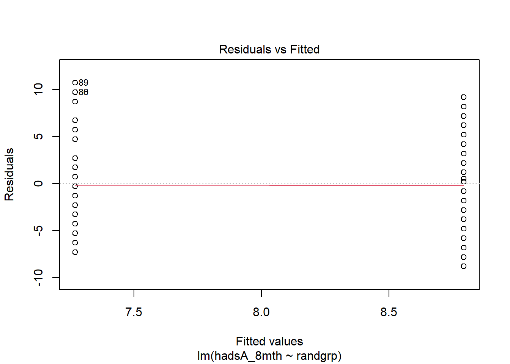
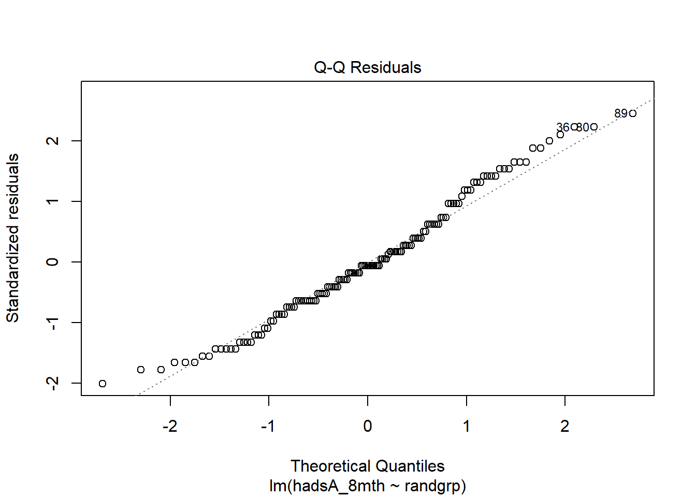
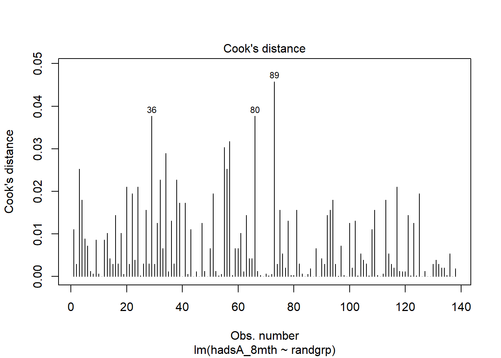

![]()
| Variable | **N** | **0** N = 87 | **1** N = 90 |
|---|---|---|---|
| __centre__ | 177 | ||
| 1 | 62 (71%) | 63 (70%) | |
| 2 | 11 (13%) | 13 (14%) | |
| 3 | 5 (5.7%) | 4 (4.4%) | |
| 4 | 9 (10%) | 10 (11%) | |
| __Carer's Age__ | 176 | ||
| Mean (SD) Median (IQR) | 56.06 (12.26) 57.00 (14.00) | 60.01 (14.70) 59.00 (22.00) | |
| Missing | 0 | 1 | |
| __genderc__ | 177 | ||
| 0 | 25 (29%) | 31 (34%) | |
| 1 | 62 (71%) | 59 (66%) | |
| __ethnicityc__ | 176 | ||
| 0 | 17 (20%) | 11 (12%) | |
| 1 | 70 (80%) | 78 (88%) | |
| Missing | 0 | 1 | |
| __HADS-Anxiety baseline__ | 176 | ||
| Mean (SD) Median (IQR) | 9.25 (4.32) 9.00 (6.00) | 7.98 (4.33) 8.00 (7.00) | |
| Missing | 0 | 1 | |
| __HADS-Depression baseline__ | 176 | ||
| Mean (SD) Median (IQR) | 5.51 (3.95) 5.00 (5.00) | 5.46 (3.99) 4.00 (6.00) | |
| Missing | 0 | 1 | |
| __Mental Health Score__ | 176 | ||
| Mean (SD) Median (IQR) | 58.24 (21.70) 60.00 (33.33) | 59.63 (22.86) 60.00 (33.33) | |
| Missing | 0 | 1 |
Logistic Regression - Examples
Quarto
R
Academia
Medical Statistics
Logistic Regression
Hello dear readers and welcome back to my blog for my usual post appointment. The summer break is now over (sadly) and I am slowly going back to business as usual. Before teaching duties will overwhelm my agenda and time, I take this occasion to wrap up the last topics from my previous posts on the statistical analysis of medical data. I wish today to discuss some concrete examples to put into practice the theoretical basis introduced previously. I hope this could provide a nice conclusion to the topic and be of help to might need to learn or apply such methods. I will also put more emphasis on the actual software commands needed in order to implement the methods illustrated in the previous posts. Now, let’s get started!
Example
For today’s content I will use a real clinical trial data set example, the STARTtrial, which was a randomised parallel group trial aimed at investigating a new support for cares of people with dementia compared with usual care. The primary outcome was the anxiety sub score (HADS-A) of an anxiety and depression questionnaire collected \(8\) months after randomisation, where the depression sub score was a secondary outcome of the trial. In general, higher scores on HADS scales indicate increased anxiety/depression.
The file containing the trial data has the following variables:
- id = patient identifier
- randgrp = randomised group (0=TAU, 1=intervention)
- centre = study centre (from 1 to 4)
- agec = carers age at baseline (in years)
- genderc = carers gender (0=male, 1=female)
- ethnicityc = carers ethnicity (0=other, 1=white)
- hadsA_0 = baseline HADS Anxiety score (HADS-A)
- hadsD_0 = baseline HADS Depression score (HADS-D)
- MH_0 = baseline mental health score
- hadsA_8mth = HADS Anxiety score at 8 months follow-up
- hadsD_8mth = HADS Depression score at 8 months follow-up
Summary statistics for the baseline characteristics of the trial are shown in Table 1.
Setting up the data
As the first step, let us open the file STARTtrial.dta containing the study data set that will be used in our practical. The .dta extension refers to STATA data set file, which can be easily read into R in different ways. We are going to use the read_dta function from the haven package. You can achieve this by first installing the package via install.packages("haven"), and then typing the commands
# load package
library(haven)
# load data from .dta file
STARTtrial <- read_dta("STARTtrial.dta")Analyse the primary outcome
We now proceed to generate a table of key summary statistics for the HADS-A score at \(8\) months, separately by treatment group. Since HADS scores can be treated as continuous data, we will focus on relevant summary statistics such as mean, standard deviation and sample size.
# generate summary statistics of interest for HADS-A score at 8 months
# first need to split data set by group (TAU vs intervention) (ignoring missing values using the function complete.cases)
STARTtrial <- STARTtrial[complete.cases(STARTtrial),]
STARTtrial_tau <- STARTtrial[STARTtrial$randgrp==0,]
STARTtrial_int <- STARTtrial[STARTtrial$randgrp==1,]
# next calculate summary stats for each subset
hadsA_8th_mean <- c(mean(STARTtrial_tau$hadsA_8mth),
mean(STARTtrial_int$hadsA_8mth))
hadsA_8th_sd <- c(sd(STARTtrial_tau$hadsA_8mth),
sd(STARTtrial_int$hadsA_8mth))
hadsA_8th_n <- c(length(STARTtrial_tau$hadsA_8mth),
length(STARTtrial_int$hadsA_8mth))
#put results into table format (and assign names to rows and columns)
tbl_sum_hadsA_8 <- cbind(hadsA_8th_mean,hadsA_8th_sd,hadsA_8th_n)
rownames(tbl_sum_hadsA_8) <- c("TAU","INT")
colnames(tbl_sum_hadsA_8) <- c("mean","sd","n")
#print results rounding up numbers up to 2 decimals
print(tbl_sum_hadsA_8, digits = 3) mean sd n
TAU 8.79 4.44 71
INT 7.27 4.36 67Next, we fit a regression model to investigate whether there is a treatment effect for the \(8\) month HADS-A outcome. The model is a linear regression (since HADS scores are continuous), where HADS-A at \(8\) months is the dependent variable while the randomised group indicator is the only predictor included:
\[
\text{HADS-A}_{8mth}=\beta_0+\beta_1\times \text{Group} + \varepsilon,
\] where \(\beta_1\) represents the treatment effect of interest (i.e. difference in outcome between intervention (1) and TAU (0)). We can fit the model using the lm function in R.
# use lm function to fit linear regression using hadsA_8mth as dependent variable and randgrp as predictor: the symbol ~ is used to separate outcome from independent variables, while the argument data is used to pass the data set from which variable names should be read by the lm function
lm_hadsA_8mth <- lm(hadsA_8mth ~ randgrp, data = STARTtrial)
# summarise the regression results using the summary function
summary(lm_hadsA_8mth)
Call:
lm(formula = hadsA_8mth ~ randgrp, data = STARTtrial)
Residuals:
Min 1Q Median 3Q Max
-8.7934 -2.7934 -0.2687 2.7313 10.7313
Coefficients:
Estimate Std. Error t value Pr(>|t|)
(Intercept) 8.7934 0.5220 16.845 <0.0000000000000002 ***
randgrp1 -1.5248 0.7492 -2.035 0.0438 *
---
Signif. codes: 0 '***' 0.001 '**' 0.01 '*' 0.05 '.' 0.1 ' ' 1
Residual standard error: 4.399 on 136 degrees of freedom
Multiple R-squared: 0.02956, Adjusted R-squared: 0.02242
F-statistic: 4.142 on 1 and 136 DF, p-value: 0.04377# extract estimates of interest
coef(lm_hadsA_8mth)["randgrp1"] # model coefficient for randgrp randgrp1
-1.524771 # associated 95% confidence interval
confint(lm_hadsA_8mth, level = 0.95)["randgrp1",] 2.5 % 97.5 %
-3.00631277 -0.04322826 # and associated p-value
summary(lm_hadsA_8mth)$coefficients["randgrp1","Pr(>|t|)"][1] 0.04376712For the next step, we can quickly check whether the assumptions of the model seem to be satisfied. For example, we can check the assumptions related to normality and homskedasticity of the residuals and presence of possible influential outliers using the function plot.
# check model assumptions
plot(lm_hadsA_8mth, 1) # residuals vs fitted values
plot(lm_hadsA_8mth, 2) # Q-Q plot for normality
plot(lm_hadsA_8mth, 4) # Cook's distance
Finally, we can compare the regression results with those from a two-sample t-test using the function t.test
# use t.test function perform t-test on same data
tt_hadsA_8mth <- t.test(hadsA_8mth ~ randgrp, data = STARTtrial)
# print summary results
print(tt_hadsA_8mth)
Welch Two Sample t-test
data: hadsA_8mth by randgrp
t = 2.0363, df = 135.78, p-value = 0.04366
alternative hypothesis: true difference in means between group 0 and group 1 is not equal to 0
95 percent confidence interval:
0.0439889 3.0055521
sample estimates:
mean in group 0 mean in group 1
8.793427 7.268657 Analysis allowing for baseline
We now check for the correlation between HADS-A at \(8\) months and its baseline measurement using the cor function to return the Pearson’s correlation coefficient estimate.
# use cor function to get correlation between HADS-A at follow-up and baseline
cor(STARTtrial$hadsA_8mth, STARTtrial$hadsA_0, method = "pearson")[1] 0.6976733Due to the substantial association between the measures, it is advisable to adjust our regression analysis for the baseline scores to improve estimation by likely reducing the level of uncertainty surrounding our initial estimate from the unadjusted model. We can do this by simply additively including the predictor hadsA_0 into our regression model
\[ \text{HADS-A}_{8mth}=\beta_0+\beta_1\times \text{Group} + \beta_2\times \text{HADS-A}_{base} + \varepsilon, \]
Using R commands:
# fit same model but also include baseline HADS-A score as independent predictor
lm_hadsA_8mth_adj <- lm(hadsA_8mth ~ randgrp + hadsA_0, data = STARTtrial)
# summarise the regression results using the summary function
summary(lm_hadsA_8mth_adj)
Call:
lm(formula = hadsA_8mth ~ randgrp + hadsA_0, data = STARTtrial)
Residuals:
Min 1Q Median 3Q Max
-6.7932 -1.9147 -0.1564 1.8349 8.7722
Coefficients:
Estimate Std. Error t value Pr(>|t|)
(Intercept) 2.51959 0.66665 3.779 0.000235 ***
randgrp1 -1.18203 0.53818 -2.196 0.029773 *
hadsA_0 0.71730 0.06306 11.374 < 0.0000000000000002 ***
---
Signif. codes: 0 '***' 0.001 '**' 0.01 '*' 0.05 '.' 0.1 ' ' 1
Residual standard error: 3.155 on 135 degrees of freedom
Multiple R-squared: 0.5045, Adjusted R-squared: 0.4971
F-statistic: 68.71 on 2 and 135 DF, p-value: < 0.00000000000000022# extract estimates of interest
coef(lm_hadsA_8mth_adj)["randgrp1"] # model coefficient for randgrp randgrp1
-1.182029 # associated 95% confidence interval
confint(lm_hadsA_8mth_adj, level = 0.95)["randgrp1",] 2.5 % 97.5 %
-2.2463776 -0.1176809 # and associated p-value
summary(lm_hadsA_8mth_adj)$coefficients["randgrp1","Pr(>|t|)"][1] 0.02977339Sub group investigation
If we suspect that the effect of the intervention differs across centres, we might need to further update our regression model to account for this possible interaction by including both centre (expressed as \(3\) dummy variables) and the interaction term between centre and group (expressed as separate terms for each dummy variable included).
\[
\text{HADS-A}_{8mth}=\beta_0+\beta_1\times \text{Group} + \beta_2\times \text{HADS-A}_{base} + \beta_3\times \text{Centre} +\beta_4\times \text{Group} \times \text{Centre} + \varepsilon,
\] and we can fit the model in R by typing
# fit same model but also include centre and interaction between centre and group (denoted by symbol *) into the model. R recognises that centre is a categorical variable and automatically includes a series of 3 dummies into the model representing this variable (leaving out centre 1 as the reference group)
lm_hadsA_8mth_int <- lm(hadsA_8mth ~ randgrp + hadsA_0 + centre + randgrp*centre, data = STARTtrial)
# summarise the regression results using the summary function
summary(lm_hadsA_8mth_int)
Call:
lm(formula = hadsA_8mth ~ randgrp + hadsA_0 + centre + randgrp *
centre, data = STARTtrial)
Residuals:
Min 1Q Median 3Q Max
-6.4122 -1.9532 -0.2352 2.0087 8.5434
Coefficients:
Estimate Std. Error t value Pr(>|t|)
(Intercept) 2.22899 0.70300 3.171 0.00190 **
randgrp1 -0.91742 0.62271 -1.473 0.14312
hadsA_0 0.74045 0.06399 11.571 < 0.0000000000000002 ***
centre2 1.58445 1.11635 1.419 0.15822
centre3 -0.63353 1.60466 -0.395 0.69364
centre4 -0.91217 1.33613 -0.683 0.49602
randgrp1:centre2 -4.28359 1.59657 -2.683 0.00825 **
randgrp1:centre3 2.78764 2.27011 1.228 0.22169
randgrp1:centre4 1.67696 1.89237 0.886 0.37717
---
Signif. codes: 0 '***' 0.001 '**' 0.01 '*' 0.05 '.' 0.1 ' ' 1
Residual standard error: 3.089 on 129 degrees of freedom
Multiple R-squared: 0.5462, Adjusted R-squared: 0.518
F-statistic: 19.41 on 8 and 129 DF, p-value: < 0.00000000000000022# extract estimates of interest (treatment effect now changes by centre and is represented by each interaction term)
coef(lm_hadsA_8mth_int)["randgrp1"] # trt effect at centre 1 (reference) randgrp1
-0.9174176 coef(lm_hadsA_8mth_int)["randgrp1:centre2"] # trt effect at centre 2randgrp1:centre2
-4.283591 coef(lm_hadsA_8mth_int)["randgrp1:centre3"] # trt effect at centre 3randgrp1:centre3
2.787645 coef(lm_hadsA_8mth_int)["randgrp1:centre4"] # trt effect at centre 4randgrp1:centre4
1.676964 # associated 95% confidence intervals
confint(lm_hadsA_8mth_int, level = 0.95)["randgrp1",] 2.5 % 97.5 %
-2.149467 0.314632 confint(lm_hadsA_8mth_int, level = 0.95)["randgrp1:centre2",] 2.5 % 97.5 %
-7.442438 -1.124745 confint(lm_hadsA_8mth_int, level = 0.95)["randgrp1:centre3",] 2.5 % 97.5 %
-1.703833 7.279122 confint(lm_hadsA_8mth_int, level = 0.95)["randgrp1:centre4",] 2.5 % 97.5 %
-2.067134 5.421061 # and associated p-values
summary(lm_hadsA_8mth_int)$coefficients["randgrp1","Pr(>|t|)"][1] 0.143116summary(lm_hadsA_8mth_int)$coefficients["randgrp1:centre2","Pr(>|t|)"][1] 0.008252469summary(lm_hadsA_8mth_int)$coefficients["randgrp1:centre3","Pr(>|t|)"][1] 0.2216922summary(lm_hadsA_8mth_int)$coefficients["randgrp1:centre4","Pr(>|t|)"][1] 0.3771739Due to multiple testing, if all p-values associated with centre-specific treatment effects need to be interpreted, then some form of adjustment is needed. One simple approach is the so-called Bonferroni correction, where statistical significance for each of the above \(4\) p-values is judged based on the updated significance level obtained as \(\alpha^\star=\alpha/4\).
Sensitivity analysis
To account for possible imbalances between group in terms of the baseline variables agec and genderc, an additional regression analysis can be run where these variables are additively included into the model (assuming no interaction across centres for simplicity). This can be done as usual using the lm function in R.
# fit same model but also include baseline HADS-A score as independent predictor
lm_hadsA_8mth_adj2 <- lm(hadsA_8mth ~ randgrp + hadsA_0 + agec + genderc, data = STARTtrial)
# summarise the regression results using the summary function
summary(lm_hadsA_8mth_adj2)
Call:
lm(formula = hadsA_8mth ~ randgrp + hadsA_0 + agec + genderc,
data = STARTtrial)
Residuals:
Min 1Q Median 3Q Max
-6.7567 -1.9576 -0.2386 1.6849 7.7786
Coefficients:
Estimate Std. Error t value Pr(>|t|)
(Intercept) -1.00467 1.42807 -0.704 0.48296
randgrp1 -1.39952 0.53620 -2.610 0.01009 *
hadsA_0 0.72288 0.06265 11.538 < 0.0000000000000002 ***
agec 0.05553 0.02111 2.631 0.00951 **
genderc1 0.54516 0.58319 0.935 0.35159
---
Signif. codes: 0 '***' 0.001 '**' 0.01 '*' 0.05 '.' 0.1 ' ' 1
Residual standard error: 3.09 on 133 degrees of freedom
Multiple R-squared: 0.5316, Adjusted R-squared: 0.5176
F-statistic: 37.74 on 4 and 133 DF, p-value: < 0.00000000000000022# extract estimates of interest
coef(lm_hadsA_8mth_adj2)["randgrp1"] # model coefficient for randgrp randgrp1
-1.399523 # associated 95% confidence interval
confint(lm_hadsA_8mth_adj2, level = 0.95)["randgrp1",] 2.5 % 97.5 %
-2.4601118 -0.3389335 # and associated p-value
summary(lm_hadsA_8mth_adj2)$coefficients["randgrp1","Pr(>|t|)"][1] 0.01009046The treatment effect has somewhat changed compared to the adjusted analysis without these baseline variables, therefore suggesting how their inclusion might be needed. However, the overall conclusion of the study remains unaltered as the overall treatment effect (assuming no interaction) remained statistically significant (and possibly clinically relevant) across all adjusted analyses.
Conclusion
What do you think, was this exercise useful? I think it is a nice way to show how some methods that we have learned before can be used to perform standard clinical trial analyses within a relatively simple setting. I hope this was useful and would love to receive any kind of feedback you might have on today’s content. See you soon!